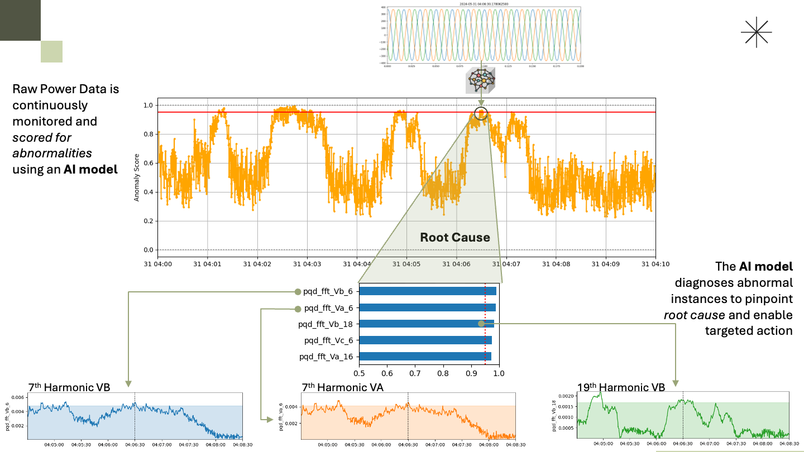

EnergyAI-Powered Power Quality Detection for Semiconductor Fabs
Semiconductor fabs run on razor-thin tolerances. A microsecond voltage sag or a subtle harmonic disturbance can corrupt an entire wafer batch — but pinpointing the cause in a sea of high-frequency power data is a needle-in-a-haystack problem at industrial scale. We developed the core machine learning IP for an early-stage engineering startup targeting this exact problem. Working from raw ultra-high resolution power waveform data, we designed and implemented a time series classification system capable of automatically identifying and categorizing power quality events — including transients, sags, swells, flicker, and harmonic distortion — in real time. The models were built with interpretability as a first-class requirement: every classification comes with a transparent explanation of the signal features that drove the decision, giving facility engineers the diagnostic insight they need, not just an alert.